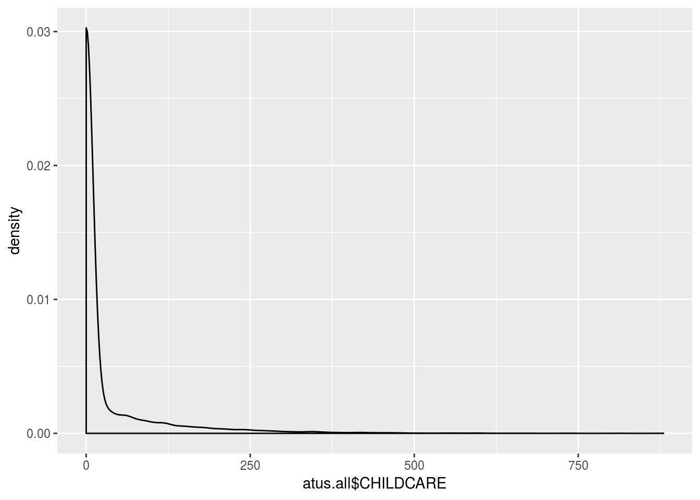
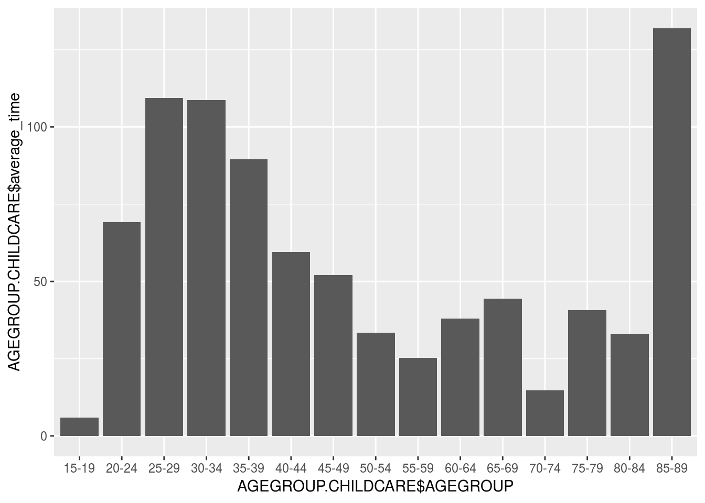
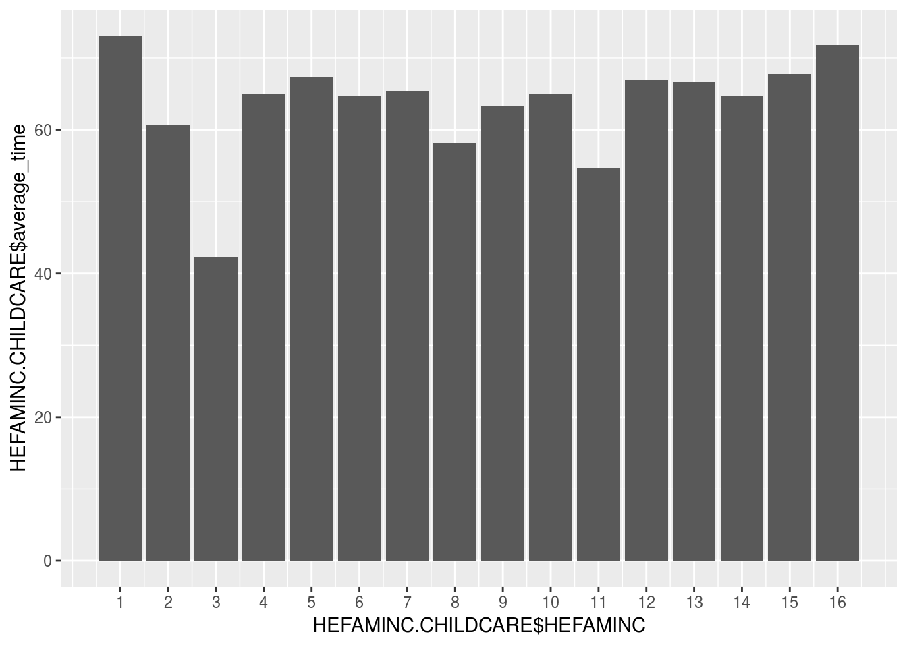
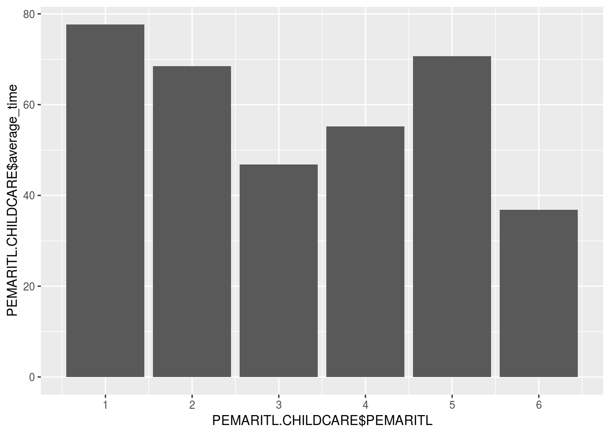
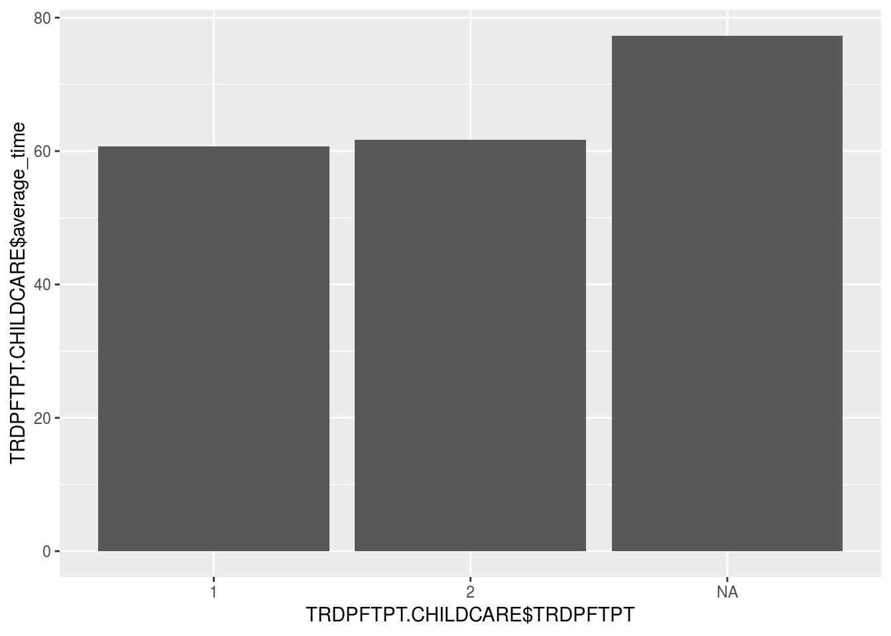
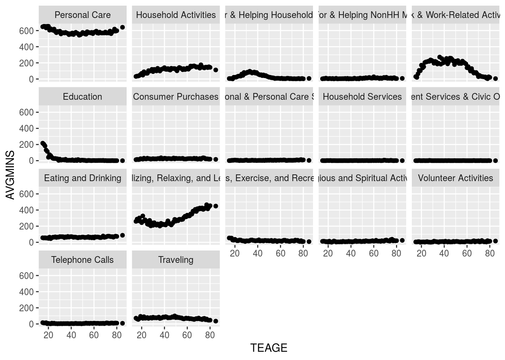
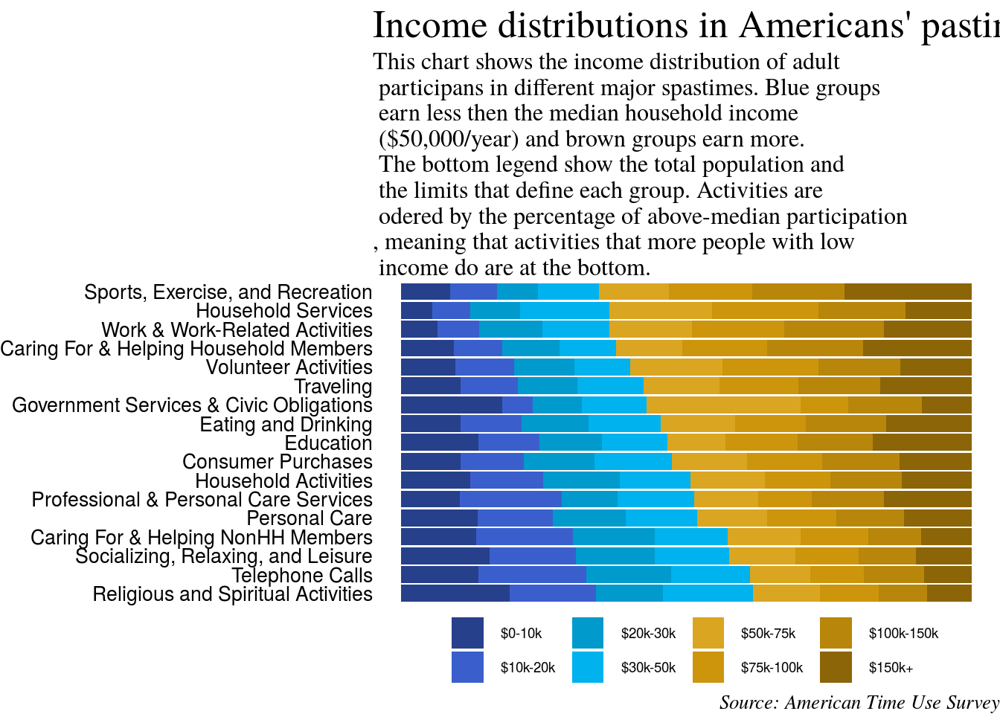

Intro & Background
I’ve just finished Final Project of Data Analysis course on leanpub.
Completed Data Analysis from @leanpub
— Yamato Kataoka (@_yamatt) December 24, 2018
Completed 9/11 from #CBDS #DataScience pic.twitter.com/ZYIthtiAGP
This project has been generated to practice everything I have learned in this course set.
We’ll be interested in some sort of questions like:
Does women or men spend more time with their children?
Do younger parents spend more time with their children?
Do richer people spend more time with their children compared to poorer people?
Do married couples spend more time with their children compared to single parents?
Do full-time workers spend more time with their children compared to part-time workers?
How do different income groups spend time doing each activity?
Data
The American Time Use Survey (ATUS) is a time-use survey of Americans, which is sponsored by the Bureau of Labor Statistics (BLS) and conducted by the U.S. Census Bureau. Respondents of the survey are asked to keep a diary for one day carefully recording the amount of time they spend on various activities including working, leisure, childcare, and household activities.
Included in the data are main demographic variables such as respondents’ age, sex, race, marital status, and education. The data also includes detailed income and employment information for each respondent. While there are some slight changes to the survey each year, the main questions asked stay the same. You can find data dictionaries (also called codebooks) at https://www.bls.gov/tus/atuscpscodebk16.pdf for the CPS data and at https://www.bls.gov/tus/atusintcodebk16.pdf for the rest of the variables.
Importing Data
First we’ll have to upload the two .dat files (atuscps_2016.dat and atussum_2016.dat) into RStudio Cloud after download from https://www.bls.gov/tus/#data
and create an object called atus.all.:
library(janitor)
library(ggplot2)
library(dplyr)
library(lubridate)
library(zoo)
library(forcats)
library(ggthemes)
library(knitr)
library(tidyr)# Read a file in table format and creates a data frame from it
atus.cps <- read.delim('data/raw_data/atuscps_2016.dat', sep=",")
atus.sum <- read.delim('data/raw_data/atussum_2016.dat', sep=",")
# We can create a table including these two dataset
# separeted by each respondent(TUCASEID)
atus.all <- atus.sum %>%
left_join(atus.cps %>% filter(TULINENO==1), by = c("TUCASEID"))Exploratory Data Analysis
https://www.bls.gov/tus/lexiconwex2016.pdf lists all the activity codes. All activities start with t and then a 6-digit number that combines the major category, the 2nd tier, and the 3rd tier of the activity.
We’ll figure out How much time, on average, does a person in the sample spend on “Socializing and communicating with others”?. According to https://www.bls.gov/tus/lexiconwex2016.pdf, We’ll find the variable, t120101, associated with “Socializing and communicating with others.”
## “Socializing and communicating with others” is 120101 from https://www.bls.gov/tus/lexiconwex2016.pdf
mean(atus.all$t120101)## [1] 38.06481We’ll also find the activity code that is associated with “Caring For & Helping HH Children” to show overview of childcare.
I created a column in the data frame atus.all called CHILDCARE that is the sum of all the columns that start with t0301.
atus.all <- atus.all %>%
# We can culculate the sum of all the columns that start with `t0301`
# which is related childcare.
mutate(CHILDCARE = rowSums(.[, grep('t0301', colnames(.))]))I’m wiriting code in ggplot2 to plot the density function of the variable CHILDCARE.
ggplot(atus.all) +
geom_density(aes(atus.all$CHILDCARE))
Almost all people spend around 30 minites for caring child.
Analysis Approach
Inferential Data Analysis
We are going to answer whether women or men spend more time with their children. Just start by grouping individuals by their gender and calculate the average time men and women spend with their children.
atus.all %>%
# Grouping by TESEX which is refered as respondent's sex
group_by(TESEX) %>%
summarize(., average_time = mean(CHILDCARE, na.rm = T))## # A tibble: 2 x 2
## TESEX average_time
## <int> <dbl>
## 1 1 19.0
## 2 2 33.2We can see that women (2), on average, spend around 33 minutes more with their children than men(1).
We’ll use the table() function to look at the variable TRDPFTPT which shows whether the person works full time or part time. You will notice that the variable also takes the value -1. This is probably due to non-response or other data collection reasons. Replace these values with NA in your data so they don’t affect your analysis.
## replace -1 in the variable TRDPFTPT with NA.
atus.all$TRDPFTPT[atus.all$TRDPFTPT==-1] <- "NA"We’ll find 4119 NAs in the dataset.
Now, we are going to explore what factors affect time spent with children. We are going to answer questions like:
Do younger parents spend more time with their children?
Do richer people spend more time with their children compared to poorer people?
Do married couples spend more time with their children compared to single parents?
Do full-time workers spend more time with their children compared to part-time workers?
We’ll wrangle the data for each questions first.
# You'd label from 0 to 95 by 5 for each person
labs <- c(paste(seq(0, 95, by = 5), seq(0 + 5 - 1, 100 - 1, by = 5), sep = "-"), paste(100, "+", sep = ""))
# Mutated AGEGROUP colume by labs
atus.all$AGEGROUP <- cut(atus.all$TEAGE, breaks = c(seq(0, 100, by = 5), Inf), labels = labs, right = FALSE)
# Limited data to those who have at least one child (18 or younger) in the household
# The variable for the number of children (18 or younger) in the household is TRCHILDNUM.
atus.all.child <- atus.all %>%
filter(.$TRCHILDNUM > 0) Now, we’ll answer each question.
## Do younger parents spend more time with their children?
AGEGROUP.CHILDCARE <- atus.all.child %>%
group_by(AGEGROUP) %>%
summarize(., average_time = mean(CHILDCARE, na.rm = T))
# You'd show average time for childcare by age group
ggplot(AGEGROUP.CHILDCARE, aes(x = AGEGROUP.CHILDCARE$AGEGROUP, y = AGEGROUP.CHILDCARE$average_time)) +
geom_col()
## Do richer people spend more time with their children compared to poorer people?
HEFAMINC.CHILDCARE <- atus.all.child %>%
# HEFAMINC is the variable which is Family Income
# 1: Less than $5,000
# 2: $5,000 to $7,499
# 3: $7,500 to $9,999
# 4: $10,000 to $12,499
# 5: $12,500 to $14,999
# 6: $15,000 to $19,999
# 7: $20,000 to $24,999
# 8: $25,000 to $29,999
# 9: $30,000 to $34,999
# 10: $35,000 to $39,999
# 11: $40,000 to $49,999
# 12: $50,000 to $59,999
# 13: $60,000 to $74,999
# 14: $75,000 to $99,999
# 15: $100,000 to $149,999
# 16: $150,000 and over
group_by(HEFAMINC) %>%
summarize(., average_time = mean(CHILDCARE, na.rm = T))
ggplot(HEFAMINC.CHILDCARE, aes(x = HEFAMINC.CHILDCARE$HEFAMINC, y = HEFAMINC.CHILDCARE$average_time)) +
geom_col() +
scale_x_continuous(breaks = HEFAMINC.CHILDCARE$HEFAMINC) 
## Do married couples spend more time with their children compared to single parents?
PEMARITL.CHILDCARE <- atus.all.child %>%
# PEMARITL refers a question, are you now married, widowed, divorced, separated, or never married?
# 1: Married - spouse present
# 2: Married - spouse absent
# 3: Widowed
# 4: Divorced
# 5: Separated
# 6: Never married
group_by(PEMARITL) %>%
summarize(., average_time = mean(CHILDCARE, na.rm = T))
ggplot(PEMARITL.CHILDCARE, aes(x = PEMARITL.CHILDCARE$PEMARITL, y = PEMARITL.CHILDCARE$average_time)) +
geom_col() +
scale_x_continuous(breaks = PEMARITL.CHILDCARE$PEMARITL) 
## Do full-time workers spend more time with their children compared to part-time workers?
TRDPFTPT.CHILDCARE <- atus.all.child %>%
# Again TRDPFTPT is Full time (1) or part time (2) employment status of respondent
group_by(TRDPFTPT) %>%
summarize(., average_time = mean(CHILDCARE, na.rm = T))
ggplot(TRDPFTPT.CHILDCARE, aes(x = TRDPFTPT.CHILDCARE$TRDPFTPT, y = TRDPFTPT.CHILDCARE$average_time)) +
geom_col()
In the analysis above, we looked at bilateral (two-way) relationships. I have learned in this course, however, that other confounding variables can be a source of bias in my analysis. So it’s much better to look at the relationship of all relevant variables associated with time spent with children together. We’ll run a linear regression of marital status, age, sex, number of children (18 or younger), earnings, and full-time versus part-time status.
reg_model <- lm(CHILDCARE ~ PEMARITL + TEAGE + TESEX + TRCHILDNUM + HEFAMINC + TRDPFTPT, data = atus.all.child)
summary(reg_model)##
## Call:
## lm(formula = CHILDCARE ~ PEMARITL + TEAGE + TESEX + TRCHILDNUM +
## HEFAMINC + TRDPFTPT, data = atus.all.child)
##
## Residuals:
## Min 1Q Median 3Q Max
## -142.18 -57.55 -31.57 24.01 815.46
##
## Coefficients:
## Estimate Std. Error t value Pr(>|t|)
## (Intercept) 69.2225 10.7976 6.411 1.60e-10 ***
## PEMARITL -12.2342 0.8308 -14.726 < 2e-16 ***
## TEAGE -1.0881 0.1355 -8.032 1.23e-15 ***
## TESEX 33.8984 3.1078 10.907 < 2e-16 ***
## TRCHILDNUM 9.0004 1.5500 5.807 6.83e-09 ***
## HEFAMINC -0.4417 0.4038 -1.094 0.274
## TRDPFTPT2 -2.4322 4.3800 -0.555 0.579
## TRDPFTPTNA 16.4812 3.6774 4.482 7.60e-06 ***
## ---
## Signif. codes: 0 '***' 0.001 '**' 0.01 '*' 0.05 '.' 0.1 ' ' 1
##
## Residual standard error: 96.59 on 4305 degrees of freedom
## Multiple R-squared: 0.08907, Adjusted R-squared: 0.08759
## F-statistic: 60.13 on 7 and 4305 DF, p-value: < 2.2e-16In the regression, the coefficient on the variable age means how much time spent with children changes if age increases by 1. Based on our results, the difference in minutes spent with children between two people with 10 years of age difference is 10 minites.
We are going to see whether time spent on different activities varies by age. However, we will only consider activities at the major category levels. There are 18 major categories in the data including personal care, household activities, caring for & helping household members, etc. Because each activity column in the data is at the 3rd tier, we will need to start by suming columns at the activity major categories levels.
# Saved the resulting data frame as df.wide.
atus.wide <- atus.all %>%
mutate(act01 = rowSums(.[, grep('t01', colnames(.))]),
act02 = rowSums(.[, grep('t02', colnames(.))]),
act03 = rowSums(.[, grep('t03', colnames(.))]),
act04 = rowSums(.[, grep('t04', colnames(.))]),
act05 = rowSums(.[, grep('t05', colnames(.))]),
act06 = rowSums(.[, grep('t06', colnames(.))]),
act07 = rowSums(.[, grep('t07', colnames(.))]),
act08 = rowSums(.[, grep('t08', colnames(.))]),
act09 = rowSums(.[, grep('t09', colnames(.))]),
act10 = rowSums(.[, grep('t10', colnames(.))]),
act11 = rowSums(.[, grep('t11', colnames(.))]),
act12 = rowSums(.[, grep('t12', colnames(.))]),
act13 = rowSums(.[, grep('t13', colnames(.))]),
act14 = rowSums(.[, grep('t14', colnames(.))]),
act15 = rowSums(.[, grep('t15', colnames(.))]),
act16 = rowSums(.[, grep('t16', colnames(.))]),
# act17 = , there is no category 17 in the data
act18 = rowSums(.[, grep('t18', colnames(.))])) %>%
select(TUCASEID, TEAGE, HEFAMINC, starts_with("act"))I’ll convert the data from wide to long and saved the data frame as df.long.
atus.long <- atus.wide %>%
# use code to convert the wide format to long.
gather(key="ACTIVITY", value="MINS", act01:act18)Calculating the average time for each age group and call it AVGMINS. In ggplot2, plot AVGMINS against TEAGE for each category (multiple panels).Label each panel in your graph with the appropriate activity name.
activity_names <- c(
"act01" = "Personal Care",
"act02" = "Household Activities",
"act03" = "Caring For & Helping Household Members",
"act04" = "Caring For & Helping NonHH Members",
"act05" = "Work & Work-Related Activities",
"act06" = "Education",
"act07" = "Consumer Purchases",
"act08" = "Professional & Personal Care Services",
"act09" = "Household Services",
"act10" = "Government Services & Civic Obligations",
"act11" = "Eating and Drinking",
"act12" = "Socializing, Relaxing, and Leisure",
"act13" = "Sports, Exercise, and Recreation",
"act14" = "Religious and Spiritual Activities",
"act15" = "Volunteer Activities",
"act16" = "Telephone Calls",
"act18" = "Traveling"
)
atus.long %>%
group_by(ACTIVITY, TEAGE) %>%
summarise(AVGMINS = mean(MINS)) %>%
ggplot(data = .) +
geom_point(mapping = aes(x = TEAGE, y = AVGMINS)) +
facet_wrap(~ACTIVITY, labeller = as_labeller(activity_names))
As you can see, the average time spent on Personal Care, Work & Work-Related Activities and Socializing, Relaxing, and Leisure varyed by age. In addtion, middle aged people work the most compared to younger and older people based on the activity category 5 (Work & Work-Related Activities) on the graph. About the activity category 12 (Socializing, Relaxing, and Leisure), Older people spend more time socializing.
Data Visualization
Finally, we are going to create a graph that shows how different income groups spend time doing each activity. The graph is based on Henrik Lindberg’s data visualization posted here. The only difference is that we are only looking at the 18 major activity categories. We’ll use the long data that you created in the previous section and make the graph as close as possible to the graph by Henrik Lindberg.
## wrangle the data set
atus.long$income_pref <- factor(cut(atus.long$HEFAMINC,
breaks = c(0,3,6,8,11,13,14,15,Inf),
labels = c("$0-10k", "$10k-20k", "$20k-30k", "$30k-50k", "$50k-75k", "$75k-100k","$100k-150k", "$150k+"),
ordered_result = T))
df <- atus.long %>%
group_by(ACTIVITY, income_pref) %>%
summarise(AVGMINS = mean(MINS))
df1 <- aggregate(df$AVGMINS, by=list(ACTIVITY=df$ACTIVITY), FUN=sum)
df2 <- df[grep(c("10k|30k"), df$income_pref),]
df2 <- aggregate(df2$AVGMINS, by=list(ACTIVITY=df2$ACTIVITY), FUN=sum)
x = df2$x/df1$x
df2$PERCENT <- c(x)
df2 <- df2 %>%
arrange(desc(PERCENT))
p <- atus.long %>%
group_by(ACTIVITY, income_pref) %>%
summarise(AVGMINS = mean(MINS)) %>%
ggplot() +
## specify you want to generate a bar chart
geom_bar(aes(x = ACTIVITY, y = AVGMINS, fill = income_pref),
stat = 'identity', position = position_fill(reverse = TRUE)) +
## flip coordinates to make horizontal box plot
coord_flip() +
## change the colors of the bars
scale_fill_manual(values = c("royalblue4","royalblue3", "deepskyblue3", "deepskyblue2","goldenrod","darkgoldenrod3", "darkgoldenrod", "darkgoldenrod4")) +
## change the scale/labels of the actvity variable (x-axis)
scale_x_discrete(limits = fct_rev(df2$ACTIVITY),
labels = activity_names) +
## change the title, subtitle, and caption
labs(title="Income distributions in Americans' pastimes",
subtitle="This chart shows the income distribution of adult\n participans in different major spastimes. Blue groups\n earn less then the median household income\n ($50,000/year) and brown groups earn more.\n The bottom legend show the total population and\n the limits that define each group. Activities are\n odered by the percentage of above-median participation\n, meaning that activities that more people with low\n income do are at the bottom.",
caption="Source: American Time Use Survey") +
## change the theme (use ggthemes)
theme_void() +
guides(fill=guide_legend(title=NULL)) +
## fine tune the theme
theme(axis.text = element_text(size = 10,
hjust = 1),
title = element_text(size = 16,
family = "Times"),
plot.subtitle = element_text(size = 12,
family = "Times"),
legend.position = 'bottom',
legend.text = element_text(size=7),
legend.title.align = 1,
plot.caption = element_text(size = 10,
face = "italic"),
panel.grid.major = element_blank(),
panel.grid.minor = element_blank(),
axis.text.x = element_blank())
p
A few observations:
Blue groups (less than the median household income ($50,000/year)) spent more time on three categories (
Socializing, Relaxing, and Leisure,Religious and Spiritual ActivitiesandTelephone Calls).People with high income work harder than ones with low
Conclusion
We analyzed and answered some questions as the final project on Data Analysis course to try to:
Translate a general question into a data science question
Identify the type of data science question we are answering
Use data visualization and linear models to answer descriptive, exploratory,
inferential and predictive questions
Implement our answers in code.
I was fascinated by entire leanpub courses offered by faculty members in the Johns Hopkins Department of Biostatistics, Johns Hopkins Bloomberg School of Public Health. Please check out the course website.

{kind=link}